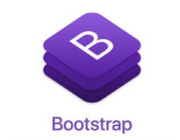

JINYOUNG PARK
#새로운 것 #갈망 #굶주림 #탐험가 #도전 #개발
#영화 #롤 #떡볶이 #밀가루 #조아
#알바 #버거킹 #맥도날드 #떡볶이 #사무보조 #책임감
Experience
FEEL IN, FILL IN! project
집체교육 과정 중 진행한 2차 프로젝트. GOOGLE의 YOUTUBE 에서 제공하는 DATA API를 활용한, 개인 크리에이터를 위한 인사이트 제공 서비스 입니다. 채널 구독자, 영상 조회수 등의 변화 추세와 채널의 상대적 위치를 알 수 있고, 댓글 감정분석, 워드클라우드 등을 제공하는 서비스 입니다.
모두의 운동
집체교육 과정의 첫번째 프로젝트. 공공데이터 포털에서 제공하는 서울시 데이터 중 운동을 할 수 있는 시설,장소 등의 정보를 저장한 파일을 활용하였습니다. 카카오의 MAP API 를 활용하여 지도 위에 운동종목, 위치, 시설운영정보 등을 제공합니다. 회원가입시 사용자의 허리둘레, 키, 몸무게 등을 입력하면 현재 나의 건강상태를 확인 할 수 있고 운동을 하도록 자극 하는 재미있는 요소도 있습니다.
인턴십 프로그램 - 웹개발
전공이 전자트랙이긴 하지만 평소에 웹 개발에 관심이 있어 java와 데이터베이스 과목을 수강한 경험이 있습니다. 덕분에 웹 분야의 기업에서 사회 경험을 해볼수 있는 좋은 기회가 생겼습니다. 사내 인사관리 프로그램을 웹으로 옮기는 작업을 하며 여러가지를 배울 수 있었습니다. Spring framework을 처음 접하였고 데이터베이스의 CRUD를 경험해 볼 수 있었습니다. 프로젝트를 처음부터 끝까지 경험 해 본 것은 아니지만, 선배님들께 좋은 가르침을 받고 업무 분담을 통한 협업을 경험할 수 있었습니다.
Education
API를 활용한 빅데이터 전처리/시각화 과정
한성대학교
학점 : 3.45
배명고등학교
Skills
-

-

-

-

- 
- 분석 프로젝트...ing
- 필인
- 모두의 운동
- 인사관리 웹프로그램
Awards & Certifications
- SQL DEVELOPER - 한국인터넷진흥원
- TOEIC 685 - YBM